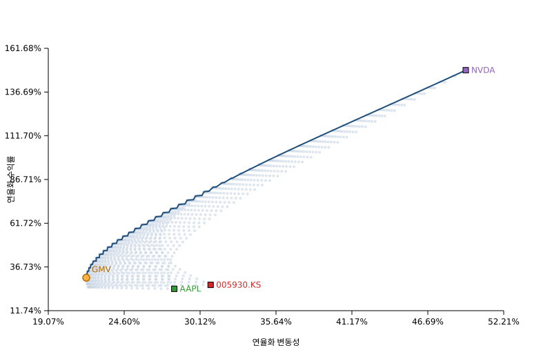

관측 시작일
-
삼성전자 · 애플 · 엔비디아
`temp.csv`에 담긴 세 종목의 일별 종가를 기반으로, 다변화 포트폴리오의 위험과 수익률을 탐색한 결과를 웹에서 손쉽게 확인할 수 있도록 구성했습니다.
분석 살펴보기효율적 프런티어는 동일한 위험 수준에서 가장 높은 기대 수익률을 제공하거나, 동일한 기대 수익률에서 가장 낮은 위험을 제공하는 포트폴리오 조합의 집합을 의미합니다. 아래의 대시보드는 2%포인트 간격의 장기(롱 온리) 가중치 격자 탐색을 통해 도출한 프런티어와 주요 포트폴리오 지표를 요약합니다.
분석은 세 종목의 공통 영업일 수익률을 기반으로 수행되며, 모든 계산은 연 252거래일 기준으로 연율화했습니다.
-
-
-
-
연간 기대수익률과 변동성은 일간 수익률을 바탕으로 연율화했습니다.
| 종목 | 연간 기대수익률 | 연간 변동성 | 일간 평균 수익률 | 일간 변동성 |
|---|
효율적 프런티어에서 전략적 의사결정에 중요한 세 가지 조합을 비교했습니다.
아래 그래프는 모든 장기 포트폴리오 조합을 점으로 표시하고, 프런티어 경계를 짙은 선으로 강조합니다.
